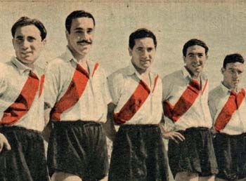

HISTORIA DE RIVER PLATE
La Era de LA MAQUINA
El período que abarca gran parte de la década del 40 y mitad de la anterior, es considerado el mejor momento del fútbol argentino y River Plate fue el principal protagonista de ese tiempo con el equipo más famoso, la Máquina.Este sería el fruto de un proceso de trabajo de inferiores iniciado en la década anterior, sumado a la continuidad de tener a exjugadores del club, con una visión compartida a cargo de la dirección técnica. Comenzó con Renato Cesarini a cargo de la dirección técnica y Carlos Peucelle en un doble rol, jugando sus últimos partidos y al mismo tiempo interviniendo en las inferiores. Después de una campaña discreta en 1940, con la confirmación de Adolfo Pedernera como titular, se afianzó la delantera y el funcionamiento general que le daría fama mundial al equipo.A partir de la segunda rueda consiguió un récord de partidos sin derrotas que lo llevó a consagrarse campeón en 1941 En su racha invicta el equipo obtendría esa misma temporada la Copa Ibarguren,la Copa Escobar y la Copa Aldao, obteniendo la cuádruple corona con todos los títulos oficiales nacionales e internacionales en juego. Tras el debut de Félix Loustau en 1942 comendzaria a formarse la famosa y recordada delantera, compuesta por Juan Carlos Muñoz, José Manuel Moreno, Adolfo Pedernera, Ángel Labruna y el mismo Félix Loustau. También alternaba la titularidad en la delantera Aristóbulo Deambrossi por alguno de los punteros. El equipo obtendría el bicampeonat. También obtendría ese año la copa Ibarguren. Al año sufriría una baja sensible a mitad del campeonato, la partida de Moreno, considerado el mejor jugador del mundo en ese momento. En 1945 asume Peucelle, sucediendo a Cesarini en la conducción. River se convierte nuevamente en campeón, destacándose en gran forma Ángel Labruna, el volante central Néstor Rossi y teniendo como capitán al arquero peruano José Soriano. Ese mismo año vuelve a consagrarse en la Copa Aldao. Ese año también debutarían, aunque con poca participación, Alfredo Di Stefano y Amadeo Carrizo. Meses volvería Moreno de México y el equipo terminaría tercero. La única vez entre 1941 y 1949 en la que River terminaría debajo del segundo puesto. Sin embargo al finalizar el año visita a Brasil donde derrota al bicampeón paulista y brasileño San Pablo. Luego de producirse la partida definitiva de Pedernera en 1947 después de sucesivas diferencias con la dirigencia. River, ya sin la Máquina, y con la dirección de otro exjugador José María Minella, forma otra gran delantera llamada La Eléctrica (Reyes, Moreno, Di Stéfano, Labruna y Loustau) y se consagra nuevamente campeón con 48 puntos y 90 goles en 30 partidos. Al año siguiente River obtendría nuevamente la Copa Aldao por quinta oportunidad, luego emprendería una breve gira por Brasil donde derrota al campeón paulista Palmeiras y finalmente participaría del primer Campeonato Sudamericano de Clubes Campeones, saliendo segundo a un punto de Vasco da Gama. Al año siguiente como resultado de una huelga masiva de jugadores comienza el éxodo de jugadores del medio local al fútbol colombiano. River sufriría en el lapso de unos meses primero la baja de Moreno y luego seguirían otros. El equipo se ve afectado por la huelga y finaliza subcampeón pero alejado del campeón. Al año siguiente River emprendería su primera visita a Europa para jugar un partido en Turín a beneficio de las familias de las víctimas de la tragedia de Superga, accidente de aviación en el cual perecieron los jugadores del Torino Football Club de Italia, quíntuple campeón de la Serie A. River enfrentó a un combinado de los demás equipos de la primera división italiana, empatando 2-2 con goles de Labruna y Di Stefano. La influencia de River en esta década se extendió a la selección nacional, en la que sus jugadores fueron protagonistas en las competencias en las que intervino, siendo goleadores del equipo (Moreno en 1942 y Di Stefano en 1947) o elegidos la figura del torneo (Pedernera en 1946 y Moreno en 1947). Argentina en estos años sin campeonatos mundiales por la guerra en Europa, tuvo absoluta supremacía en el fútbol continental. Disputó 5 copas América, ganando 4 en 1941, 1945, 1946 y 1947 y siendo subcampeón de Uruguay en 1942. La mayoría del plantel millonario participó en aquellas selecciones además de todos sus delanteros también jugaron en la representación nacional Norberto Yácono, Néstor Rossi, Bruno Rodolfi y José Ramos, entre otros.
